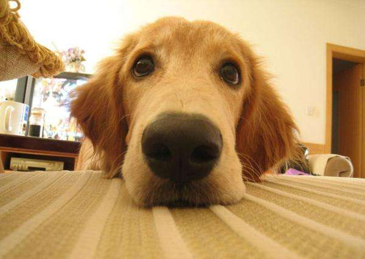
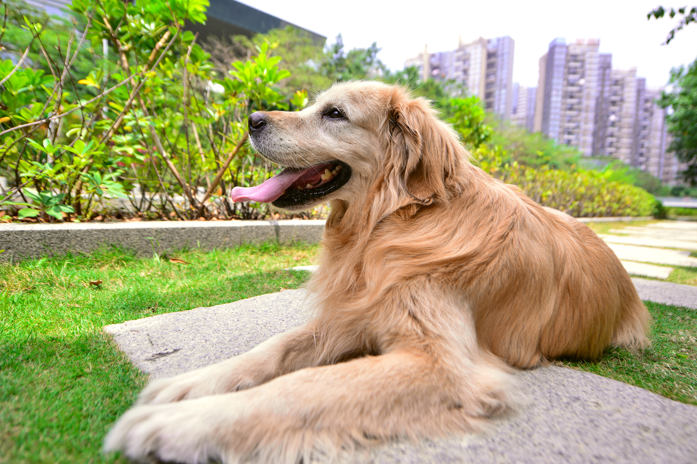
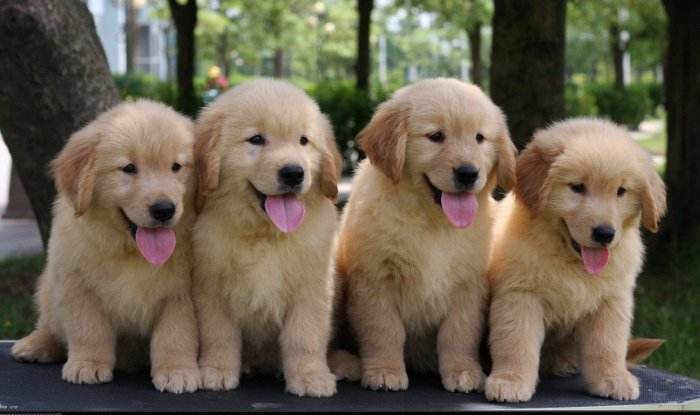

高斯模糊（英语：Gaussian Blur），也叫高斯平滑，是在Adobe Photoshop、GIMP以及Paint.NET等图像处理软件中广泛使用的处理效果，通常用它来减少图像噪声以及降低细节层次。这种模糊技术生成的图像，其视觉效果就像是经过一个毛玻璃在观察图像，这与镜头焦外成像效果散景以及普通照明阴影中的效果都明显不同。高斯平滑也用于计算机视觉算法中的预先处理阶段，以增强图像在不同比例大小下的图像效果（参见尺度空间表示以及尺度空间实现）。从数学的角度来看，图像的高斯模糊过程就是图像与正态分布做卷积。由于正态分布又叫作高斯分布，所以这项技术就叫作高斯模糊。图像与圆形方框模糊做卷积将会生成更加精确的焦外成像效果。由于高斯函数的傅立叶变换是另外一个高斯函数，所以高斯模糊对于图像来说就是一个低通滤波器。
高斯滤波是一种线性平滑滤波，适用于消除高斯噪声，广泛应用于图像处理的减噪过程。通俗的讲，高斯滤波就是对整幅图像进行加权平均的过程，每一个像素点的值，都由其本身和邻域内的其他像素值经过加权平均后得到。高斯滤波的具体操作是：用一个模板（或称卷积、掩模）扫描图像中的每一个像素，用模板确定的邻域内像素的加权平均灰度值去替代模板中心像素点的值。
高斯滤波实质上是一种信号的滤波器，其用途是信号的平滑处理，人们知道数字图像用于后期应用，其噪声是最大的问题，由于误差会累计传递等原因，很多图像处理教材会在很早的时候介绍Gauss滤波器，用于得到信噪比SNR较高的图像（反应真实信号）。与此相关的有Gauss-Laplace变换，其实就是为了得到较好的图像边缘，先对图像做Gauss平滑滤波，剔除噪声，然后求二阶导矢，用二阶导的过零点确定边缘，在计算时也是频域乘积至空域卷积。滤波器就是建立的一个数学模型，通过这个模型来将图像数据进行能量转化，噪声就是属于高频率部分，高斯滤波器平滑处理后降低噪声的影响。若使用理想滤波器，会在图像中产生振铃现象。采用高斯滤波器的话，系统函数是平滑的，避免了振铃现象。
图像大多数噪声均属于高斯噪声，因此高斯滤波器应用也较广泛。高斯滤波是一种线性平滑滤波，适用于消除高斯噪声，广泛应用于图像去噪。可以简单地理解为，高斯滤波去噪就是对整幅图像像素值进行加权平均，针对每一个像素点的值，都由其本身值和邻域内的其他像素值经过加权平均后得到。高斯滤波的具体操作是：用一个用户指定的模板（或称卷积、掩膜）去扫描图像中的每一个像素，用模板确定的邻域内像素的加权平均灰度值去替代模板中心像素点的值。
在图像处理中，高斯滤波一般有两种实现方式，一是用离散化窗口滑窗卷积，另一种通过傅里叶变换。最常见的就是第一种滑窗实现，只有当离散化的窗口非常大，用滑窗计算量非常大（即使用可分离滤波器的实现）的情况下，可能会考虑基于傅里叶变化的实现方法。由于高斯函数可以写成可分离的形式，因此可以采用可分离滤波器实现来加速。所谓的可分离滤波器，就是可以把多维的卷积化成多个一维卷积。具体到二维的高斯滤波，就是指先对行做一维卷积，再对列做一维卷积。这样就可以将计算复杂度从O(M*M*N*N)降到O(2*M*M*N)，M，N分别是图像和滤波器的窗口大小。
滤波器是建立的一个数学模型，通过它来将图像数据进行能量转化，能量低的就排除掉，噪声属于低能量部分。编程运算的话就是一个模板运算，拿图像的八连通区域来说，中间点的像素值就等于八连通区的像素值的均值，这样达到平滑的效果。假如使用理想滤波器，则会在图像中产生振铃现象。如果采用高斯滤波器，系统函数为平滑的，避免了振铃现象。由于高斯函数的傅立叶变换仍是高斯函数，因此高斯函数能构成一个在频域具有平滑性能的低通滤波器。可以通过在频域做乘积来实现高斯滤波。均值滤波是对信号进行局部平均，以平均值来代表该像素点的灰度值。矩形滤波器(Averaging Box Filter)对这个二维矢量的每一个分量进行独立的平滑处理。通过计算和转化，得到一幅单位矢量图。这个512×512的矢量图被划分成一个8×8的小区域，再在每一个小区域中，统计这个区域内的主要方向，亦即将对该区域内点方向数进行统计，最多的方向作为区域的主方向。于是就得到了一个新的64×64的矢量图。这个新的矢量图还可以采用一个3×3模板进行进一步的平滑。